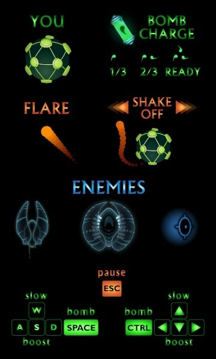
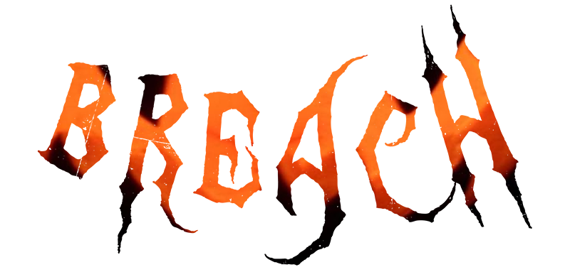
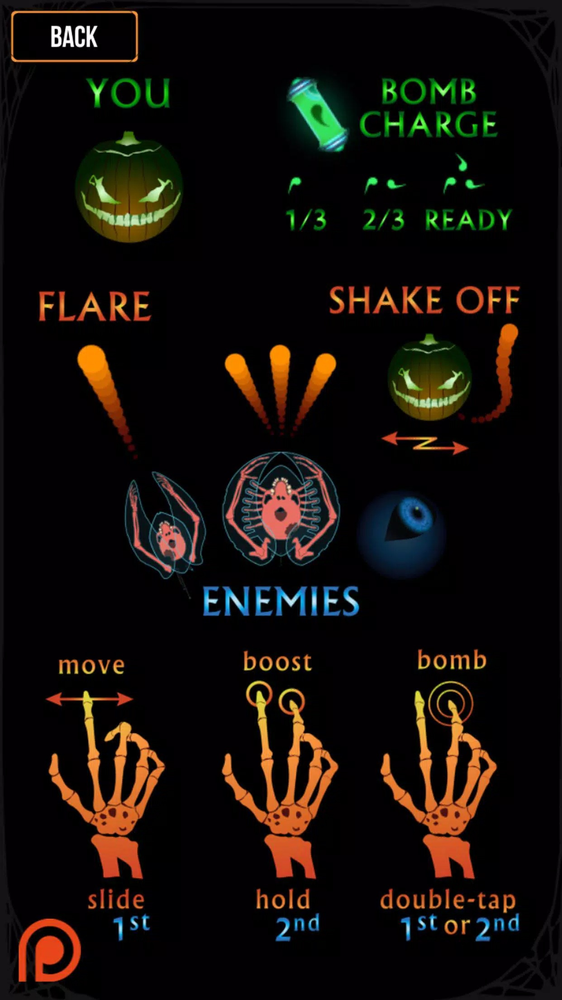
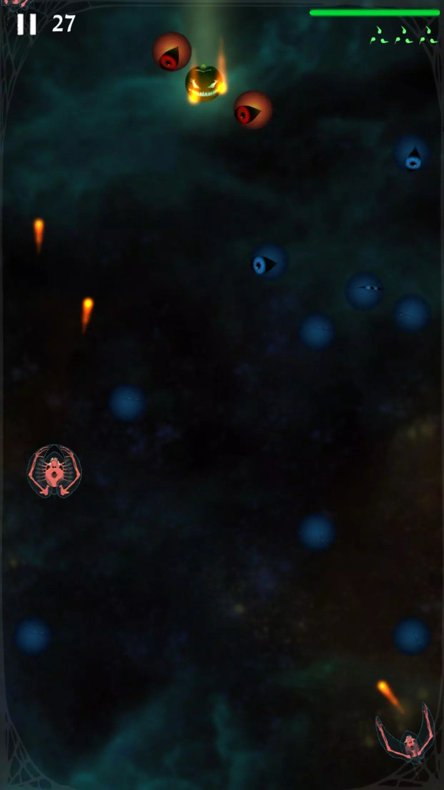
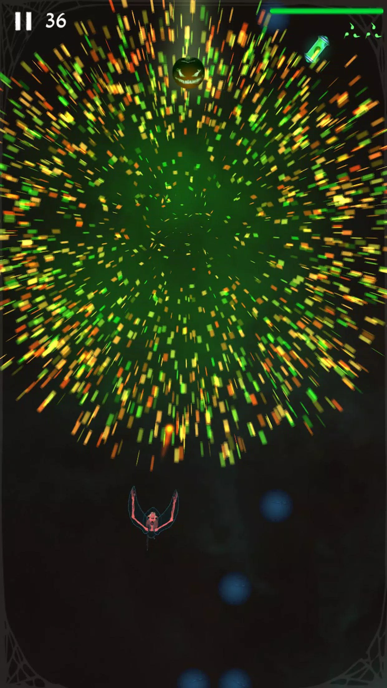

Breach
2D web and mobile game made at Fight or Flight Games
Overview
Built off the base code of my prior solo-made game, Rainbow Blues Cat, Breach started as a side-project at Fight or Flight Games that ended up becoming the main focus during my time there. It initially served as a playable game on the company website and later expanded to mobile.


The player navigates a spherical ship through enemies in space for as long as possible. Additional game mechanics and designs come inspired from the field of immunology as the larger goal of Fight or Flight Games sought to inspire interest in the field.
Inspiration and Game Mechanics
Though the game takes place in a sci-fi space environment, its design is built around the conceit of a virus attacking the immune system.
The player's ship design is based off a virus. The enemy ships are semi-translucent and function as B-cells. These ships shoot "flares" that do not kill the player outright as they would in a normal space shooter. These flares act as antibodies that when attached to a virus signify to other white blood cells to attack it. Thus when the ship's flares hit the player, the "Mine" enemies (blue circles) will suddenly activate and begin navigating toward the player when they get near. The more flares that bind to the player ship, the more powerful the attraction of Mine enemies is and the slower the ship can steer.
The player has two defensive mechanics against attached flares The first being to shake them off one-by-one, the real-world counterpart to this being a virus's ability to shed its own proteins that have an antibody attached. The second mechanic simply being a virus's ability to replicate and leave its tagged versions behind. The gameplay mechanic for this mechanism takes much more liberty from its scientific counterpart. The player shoots its old infected ship forward and has it self-destruct in the distance, killing all enemies around it. The new replicated player ship is thus free of all attached flares and can steer undetected again at full capacity.
Additionally, the ship has several energy mechanics that are largely disconnected from how a real virus works that are also liberties taken for the sake of gameplay. Replicating the ship into a bomb requires collecting bomb charges from the environment. And the player can boost and slow the ship using slowly recharging energy to better avoid enemies.

Web Version
The web version was hosted on the Fight or Flight Games website and held a leaderboard tracking user scores. In order to have your score tracked, users would have to create an account. So the game served as an impetus for users to make a Fight or Flight games account that could also be used to notify them of any upcoming company news.

Halloween Reskin and Mobile Launch
For the month of October, Fight or Flight Games did a promotional event that reskinned the game in a Halloween theme. The game would release on mobile for the first time with this skin. Leaderboards were reset and prizes were given to high scorers.


That's why I'm not at the top of the leaderboard.
The above image shows an early build of the Halloween web version. The wings that slow the ship still appear when inactive by default and the background is nonexistent.



Higher quality images of the finalized app store version
Outcome
Perhaps more work would have been done to make this a more fully fleshed out game from here onward. However the company would not win the funding it sought to continue moving forward and make its more ambitious ideas. And unfortunately I needed to eat food so I had to search for paying work.